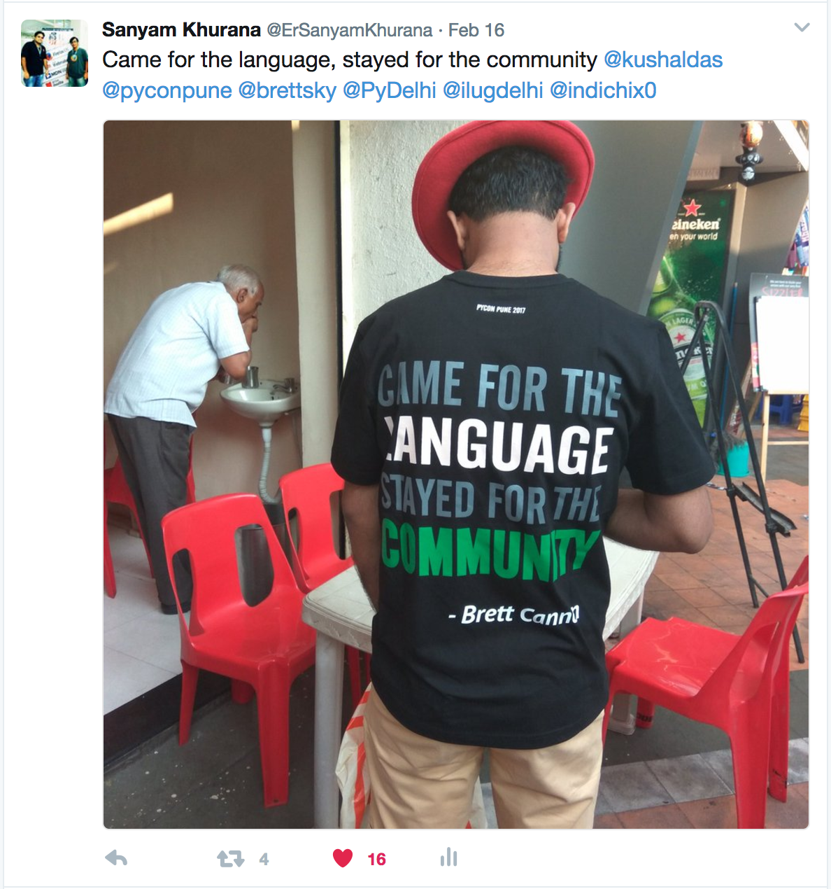

After PyCon India & PyDelhiConf; here comes another lovely Python Conference in India -- PyCon Pune. It was first year of the conference in 2017 and I feel really delighted for getting a chance to attend it. The conference was on 16th and 17th Feb followed by 2 days of Dev-Sprint on 18th and 19th Feb. It was a very brave decision to have conference on weekdays, and I was astonished to see so many people at the conference.
Unlike other two Python Conferences, this conference was on single track (which made my life sorted for being a volunteer). Following is about my journey to PyCon Pune.
DAY 0
The journey started on Feb 15th 2017 in the morning. I boarded the flight at 5:00 AM and landed at 7:00 AM in Pune. This day was the day before the PyCon Pune Conference would actually begin. We had a lot to do on this day. I'd like to thank Chandan and Sayan for accomodating me at their place. We had a lot of friends crashing in which made the remaining days epic and full of fun.
Sayan and Chandan left at 10:00 AM for Reserved Bit. Me and Subho reached there at 12:00 PM and found a bunch of folks hacking on various stuff. I met Nick Coghlan (Core-Contributor CPython), Honza (Core-Contributor- Django Project). Farhan was hacking with Siddhesh to set up the video recording software (OBS) on various machines. Finally, after a lot of hassle it worked on Linux.
A lot happened on 15th. From helping with badges to wondering with Kushal and Amol for getting various stuff done, the day went by very quickly. In night we reached Amanora Fern, Pune; the venue where the conference was scheduled. The venue was totally fabulous and I was awestruck. I helped in setting up video equipments along with Farhan, Siddhesh and Abdul. See the happiness, after making it work :)
Later I helped a little with setting up the PSF + Pyladies Pune booth. We then went to dinner & returned at home at 12:00 AM.
I slept at 12:30 AM; was really tired. A lot had already happened over 24 hours. I was deprived of sleep. Amit was supposed to come to Pune at 5:00 AM in the morning and told me that he would call. Although my phone tried to scream a lot, but I didn't wake up :P
Later Subho waked me up at 5:00 AM -- and then again I had just 4 hour 30 min sleep in the last 47 hours.
DAY 1
We prepared to go to venue at 7:00 AM since we were handling registrations. Kushal came to give us a ride to the Conference venue in his car. We got to DC, Pune to get some meals for the Volunteers. I noticed Kushal wore the Conf t-shirt with an awesome quote by Brett Cannon (core-developer of CPython). I tweeted that, which got a lot of attention:
Most of my day went running around (but not too much when compared to PyCon India since there was single track at PyCon Pune; which I personally liked very much). Also, this is how I look when deprived of sleep.
The conference kicked-off with Keynote by Honza (Core-developer to Django project) on his OSS Life. Next talk was by Anand Chitipothu on writing Beautiful Code, which helped me in learning more about writing good code with Python.
Later in the day we had a Keynote by John Hawley, our very own Perl guy declared as a Python Programmer. One thing I liked very much during all the days was to be with John (Whatever happens in the conference, I would hear his famous dialogue "Kushal is to be blamed for that!" :P).
Me and Amit had a dinner with him in Delhi before the conference. Here is a picture of that day:
In evening, there was an awesome session by Praveen Patil (our very own Physics teacher), who showed us how Python can be used in classroom to teach various concepts to kids (and also why some teachers are criminals, because they're not able to explain something with ease).
DAY 2
The second day began again with Kushal picking us up, but this time to Reserved Bit. We both (Amit and me) got to Reserved Bit and helped in packing up t-shirts and then loading them in the cars. We then left for the venue with T-shirts.
The first keynote was by Katie, followed by Stephen Turbull and then by Nick Coghlan who is core-developer of CPython.
There was also a community talks session where me and Amit talked about PyDelhi, ILUG-D and LinuxChix India. I'll update the link of the video once it is uploaded.
The whole day was absolutely amazing. After the conference, we all went for the dinner.
DAY 3
Dev Sprints -- Me and Amit were desperately waiting for this day. We decided to walk to the venue.
On previous day, we decided to put our best effort to contribute to CPython taking help from Nick. Our goal was to do at least one patch in the two day devsprint. Yes, we both have Impostor Syndrome.
We reached Red Hat office at 10:00 AM in the morning. Nick was right there helping a few folks with CPython. The desk was pretty much occupied, so I decided to sit on the staircase nearby Nick. He was telling various things about how to set up the project etc. Me and Amit had CPython already set up, so we helped other folks.
Then we tried to understand how the issue tracker works for Python bugs. We aimed at searching some easy fixes, but most of them looked a lot aliented. So, we decided to first take up some documentation and related fixes.
Took me 1.30 hour to scrutinize the issue I wanted to work in. With help on Nick I was able to figure out the changes needed in str.index() docstring (Yes, in the C code ;)).
This was a really quick fix, and I couldn't believe that I've just opened up a PR on CPython repository. I checked with Amit and realized that we both opened our first PR at almost same point of time. The day went by and I opened a total of 4 PRs to the CPython repository. Amit did 2 fixes.
In the night we roamed at DC (Destination Center, Pune). It was just superb. For the second day of dev-sprint, we decided to do contribution to Django project and understand the workflow of the entire development cycle of Django. Reaching back home, I tried to find some bugs on the django project to work on. There was no documentation fixes; and all easy marked fixes were already assigned; and were being worked on. So, I tried to search for other bugs, but it was a no success. So, we decided to ask Honza and see if we could find something to work on. Else we would try to do some code-contributions to CPython repo.
DAY 4
We reached the Red Hat office at 10:00 AM next day. Again we were late, there were a bunch of folks sitting with Nick trying to get patches in CPython.
We couldn't find Honza and took a seat nearby Nick to start working on finding some bug that require some code contributions. I found a bug related to the help module which had various cases to be handled. It was already having two patches and wasn't updated from long. I asked Nick, if I could take it, and he responded affirmatively.
I tried to look at the patches, but at that moment I couldn't understand exactly what was being done. I decided to write it from scratch and cover every use case that is being spilled over many comments in the bug.
Once I made it work for one of the use case, the earlier patches started to make sense. I showed it to Nick via IRC and then he replied on the bug documenting what all cases are to be covered. I read more code changes and it worked for every use case. I showed it to Nick.
He told me that he won't merge it because although this is one of the approach to solve this problem, he would further like to discuss with other core-contributors to this in entirely different fashion, such as introducing an __help__ magic method. He told that I should submit a PR upstream so that would be a good starting point to get this landed.
And this is how it was another PR to CPython from PyCon Pune sprints. Now I tried to look over what other people were doing in the devsprints. I met a lot of people and yet again found out most of them know me by the name CuriousLearner. But this conference was special, people tried to address me by my real name. As usual all of them pronounced it wrong and then told me that CuriousLearner is a lot easier :)
In afternoon, I was reading the core-contributors guide and found a documentation bug and asked Nick if I should report it. And now I had 5 PRs + 1 bug report to CPython repository over the span of 1.5 days. Here is a picture of us working on CPython :)
None of the PRs are merged yet; since each one of us is waiting for the CLA (Contributor License Agreement) to be approved by PSF; which would probably be done only on Monday.
In afternoon, we had a panel discussion with all the keynote speakers on "How one should learn to program?". After that, we played some billiard, spent some time with John in the hardware room and then clicked some photos together.
Here is a picture I had with Nick after two amazing days of learning in dev-sprints:

Amit and me left the venue at 6:45 PM bidding everyone good bye -- until next time.
This has been the most awesome Python event I've ever attended. Now I'm wait eagerly to work over the PRs to get them merged upstream and of course looking forward to PyCon Pune 2018.
I would also like to congratulate every volunteer to put in so much effort to make this a huge success.